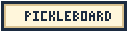

Choose a shot chapter, then Edit to change its hitter, flight or landing target. Drag the paused target, choose Place target for a tap, or open Customize to choose Target, Flight, Players, Movement, Coach tools or Precision. Undo and Redo stay beside Play in the builder footer, with Command/Control-Z available outside text fields. Space toggles Play/Pause when focus is outside other controls. Coach explains rule or movement limits. Fix for me evaluates a repair using automatic settings; Show options lists changes that need your approval. Smart Add creates a compatible continuation without changing earlier shots. Random Rally creates a new saved draft with the requested number of hits, up to 99.
Play resumes the current position and repeats until you choose Pause. Seek to any moment on the timeline or choose an exact shot chapter. Opening Edit pauses playback. 2D and 3D share one draft and playhead.
Menu contains saved plays, lessons, import/export and Court Planner. Manage plays contains the play name, My Plays and Save As. Planner keeps a separate arrangement; Use as starting layout explicitly copies it. Completed edits save on this device. If another tab changed the same play, use Save As to keep both versions. Export JSON for a backup: local storage can be cleared by the browser and is not cloud storage.
Auto Shading adjusts eligible generated movement. Coverage Guides only explain suggested positions. These are coaching approximations, not optimal-strategy predictions.
Running build is the metadata loaded with this page. Check server build compares it with the current endpoint; it does not update this tab.
Plays demonstrate common patterns rather than mandatory strategy. Choose one from the menu, then use Play/Pause and the shot-marked timeline to study it. Playback repeats until paused.
While a Play is open, choose 3D View for a spatial replay. Seek or choose shot chapters to inspect contacts, switch cameras, choose a playback speed, and Exit 3D to return to the same shared playhead.